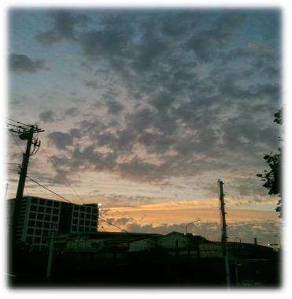

| PIETAS FABULAE. 十字の船と左のかけら (COCOROZASI.NET) | |
| 勝又 仁志 | |
| (2017) | |
十字の船と左のかけ ら
|
|
十字の船と左のかけら
目次
ぼくらはいつだって、見つからない最後の一片を探し求めて生きているんだ。
ひとりが一片のジグソーパズル。大きな一つの絵をかたちづくるのだと思っていた。
きみをかならず見つけるから。見つかってあたりまえだと、そう思っていた。
祭の前に悲しいことがあると、祭は開かれるのかどうかが気になって眠れない。でもそれを言葉にすることなどできっこない。誰も言わないその言葉を、胸にしまってしまうんだ。
きっとこんなことはいけないことなんだと、そうわかっていても抗えないのはなぜなんだろうか。
どんなに悲しくてもつらくても、描いた夢はかなえたいと、そう言ったきみの言葉がぼくらを後押ししている。
ぼくの夢は、左側にきみがいて、そうしてあの南十字へと旅立つこ と... だった。
何も知らないでいられたらどれほど気が楽だったろうか。世界はこんなもんだって、そう思えたらよかったのかもしれない。
選択しなければいけないときが来る瞬間というのは、何も前ぶれがないからいつだってギリギリだ。
星の海、みあげながら明日を信じて生きていたら、過去からの手紙が舞い込ん だ... 。
イシと語らいながら、灰色の星を見上げ、サン達を見守る。俺の生まれてきた意味はこれなのだろうと思うようになった。
ぼくらはいつだって、見つからない最後の一片を探し求めて生きているんだ。
南十字星が頭上に輝く小さな小さな星にぼくらは住んでいた。歩いてもほんの数日で一周できちゃうくらいだから、どれだけ小さなところに住んでいたのかわかるだろう。その星の上にぼくらは漂うように生きていたんだ。
毎日が南十字星の動きにそって流れていった。ぼくの前に生まれたセンっていうのはね、とってもシンプルできれいな形をしてて、生まれてからあっという間にあの南十字へと旅だっていったんだそうだ。いまだ旅立てないミロやリザやコイなんかが、いつもその話をしてくれる。憧れたような目つきで、話の合間にきまってうつむいて、そして最後はでっぱりを引っ張りあうようにして大騒ぎになって話が終わるんだ。
ぼくらにとってでっぱりの形は何よりも重要なんだ。だからおいそれとその辺の知らない奴になんか触らせたりしない 。( とは言えこっちがわに住んでる連中に知らない奴なんていないんだけどさ 。) へたに触られてひんまがったりしたらもう大変な騒ぎさ。それこそ、北の極点に住む爺様と同じてんまつになっちゃうんだから。南十字に行けなくなるなんてまったくもってとんでもない。
でもね、爺様のことはみんな大好きなんだ。誰も知らないいろんなことを知っていて、みんな何か困ったことがあると決まって爺様のところへ相談にゆく。左隣りのでっぱりが転んで歪んじゃったときだと か( だって左隣りこそがぼくらにとって一番大事な大事な部分なんだし ！) 、誰かがその左隣を裏側の街で見つけて来たときだと か( このときは爺様はほんとうに嬉しそうに喜んでくれるから ！) 、たちの悪いあの連中がやってきたときだと か( あいつらは本当に嫌な連中だから、爺様の知恵を借りないとおっぱらえないんだ 。) 、とにかく何かにつけて誰かどうかが毎日爺様を頼りにしているんだ。
あの連中っていうのは、ぼくらの星から見える薄汚い灰色の星から時々やってくる。あいつら目が良くないらしくてぼくらのことを見たりはできないらしいんだけど、爺様が言うところでは鼻がとても良いらしくて、それでぼくらを見つけては灰色の星へと連れさってしまうんだ。連れ去られるとそれはもう悲惨な目にあうと爺様は言っていた。どう悲惨なのかは知らない。だってそれを聞いちゃったら明日からおっかなくて、左隣を探すことなんてできなくなるかもしれないだろう。だから誰もその話では続きを聞こうとはしないんだ。
もうじき、ぼくにとってはじめての祭の日がやってくる。なんかすっごく楽しみ。リザはもう３回目で、コイとミロは２回目。みんな毎度のことだけど、今回こそは自分とぴったりの左隣を見つけようとそわそわしてる。爺様についで年長のソロさんなんて、どうせ今回も駄目なのさって顔してプカプカ漂ってるんだけども、そんなソロさんを応援する一団がいて、一緒になってプカプカ漂いながらなんか楽しそうに歌を歌ったりしてるんだ。そんなソロさんに爺様は今回こそ旅立てるって太鼓判を押したらしい。太鼓判ってのがなんなのかわからないけど、とにかくソロさんは次の祭で旅立つんだと聞いてまわりが大はしゃぎしている。なのにソロさんは祭が近付くにつれ、浮かない顔をしている。
そうそう、ぼくってさ実はものすごくラッキーなんだ。生まれて最初のひとまわりで実は僕にぴったりな左隣と出会ったんだよ。ひとまわりってのはね、年に一回この星を一周することがぼくらにはできるんだ。それでさ、生まれて最初に裏側に行ったときにね、見つけちゃったんだぼく。きっとそう、そうなんだよ。ぼくってあのセンとおんなじように誰よりも早く南十字に旅立つんだきっと。そしてそこでぼくと左隣は、ぴったりとくっつきあっていろんな冒険を経験するんだ。そしてそし て... 。
あれ？リザだ。おーいリザ、どこへいくの ？... なんだよ、振り返りもしないで行っちゃった。めずらしいな、コイとミロは一緒じゃないのか。ま、いいや。
とにかく祭はもうすぐなんだから、今日はこれでもう帰るね。ぼく今日は爺様のところへ行きたいんだ。南十字に旅立つときの心構えとかを聞いとかなければいけないしね。何か持っていった方が良いものとか、持ちこんじゃいけないものとか、そういうのをしっかりと聞いとかなきゃ。だから今日はこれで。ばいばい、また二三日したらくるね。祭は一週間後だからさ、今日明日でぼくは準備を整えちゃうから、そしたらまた会おう。それまでしっかりとそこにいてね。じゃね。
ひとりが一片のジグソーパズル。大きな一つの絵をかたちづくるのだと思っていた。
こんばんわ、またきちゃった。昨日からリザが帰ってこないんだ。それでみんなは大騒ぎしてるから、ぼくなんか眠れなくって。年長のみんなは、リザがあの灰色の星に連れ去られたんじゃないかって言うぼくらの話を聞きもしない。コイとミロがどんなに言ったって取りつく島もありゃしない。頭が硬いんだって、爺様はそれだけ言って自分の家にひっこんじゃった。
なんか色々と不安だよ、きみはどう思う？だいたいきみってちょっとずるいんじゃないかな。だってそこからぼくらの様子を眺めているだけなんだろう。もう何年も何年もずっとぼくらを眺めてきて、それでいてなんにも口をきかないってのはずるいんじゃないか。爺様が以前教えてくれたよ、きみたちはぼくらよりもずっと長い時間をその姿で過ごすんだって。うらやましいなそれ。ぼくらなんてせいぜい、この星が十数回あの灰色の星を回ったらここから旅立たなきゃいけないんだから。せっかくできた友達も仲間もみんなと別れてさ、左隣と一緒に二人っきりで旅立たなきゃいけない。リザがね、そう言ってたんだ。
ひょっとすると、そのせいでリザはいなくなったのかな？年長の連中はリザにいつも怒ってた。みんなが一生懸命にがんばってるのに、それに水を差すようなことを言うなって、何度もつかみかかってはリザのでっぱりを歪めようとしてた。そうか！きっとリザがいなくなったのは年長のあいつらが何かしたんだ！だからあいつらはリザが灰色の星になんて連れてかれていないってそう言い切れるんだ！
あーあ、祭までもうちょっとだっていうのに、困ったなぁ。どうしよう、コイとミロに今ぼくが発見した事実を教えた方が良いかな？でもそれが原因で祭に行けなくなったら嫌だな。ねえ、どうしたら良いと思う、きみ？
爺様に相談したって、かえってくる反応はきみと大差ないものだしな。何も言わないきみの方がまだいいかもしれない。爺様はなんだかむずかしいことを言うから、どうしていいかかえって迷うんだよね。うー ん... 。
そもそもさ、リザだって祭のことは知ってるんだからきっとすぐ帰ってくるんだとぼくは思うんだ。だって帰ってこなきゃどうしようもないじゃない。左隣をみつけられなきゃぼくらなんてどうにもならないんだから。そうだろ。ぼくらは左隣がいなきゃ次に進めないんだ。そりゃここで仲良く暮らすのも楽しいけどさ、無理矢理上にのっかってくる年長の連中はうざったいし、そのたびに歪んで小さくなっていく上のでっぱりはなんだか悔しいし、そういい事ばかりじゃないのさここだって。あのセンみたいに、上も下も右も左もパリっときれいなままで旅立てたら最高じゃないか。みんなそう願っているんだしさ。
あーもう、なんか言えよこのイシコロ！おまえってこの星ができた頃からずっとそこにいて、ずっとぼくらを見てきたんだろう。だったらぼくらの言ってることぐらいわかるだろう。ぼくは今困ってるんだから、相談に乗ってくれたっていいだろう。だって他のみんなになんてわかりっこないんだから。ぼくの言ってることがわかるのは、センぐらいなんだよ。みんなセンやぼくと違ってあちこちのでっぱりが歪んで削れて、みっともないったらありゃしないんだから。コイなんて年長の言いなりになりすぎて上のでっぱりはもうほとんど無いし、ミロだって。爺様なんかつるつるで誰ともぴったりあわない。だからきみがぼくに、なにか良い方法を教えなきゃいけないんだ。だってぼくはセンと一緒でもうすぐ旅立つんだから。ぼくはみんなとは違うんだから。
... って、言ったって何も言うわけ無いよな。きみはやっぱイシコロなんだしな。でもきみは口が硬いから好きさ。ぼくがこんなこと思ってるなんて決して言わないだろうしね。
ふう、そろそろ静かになってるかな。ぼくはもう寝なきゃ。しっかりと寝て、ぜったいに祭であの左隣と旅立つんだ。コイやミロや、リザだってそう言ってたし。
じゃあね、またくるよ。どうか次こそはなんか言えるようがんばってね。
きみをかならず見つけるから。見つかってあたりまえだと、そう思っていた。
今日きみの前に行ったとき、一瞬だけどぼくはこれを書いたのはコイかミロ、いやひょっとしたら昨日から姿が見えないリザのしわざだと思った。でそう思ったらなんだか恥ずかしくなって、だってきみに向かって話しかけてるってことをコイかミロかリザの誰かにばれちゃってるってことだろ、そう思ったら頭がうわーってなっちゃって、あわててその言葉を消しちゃったんだ。
その言葉は、地面に優しい響で書かれていた。どんなふうに書かれていたのかもうよくは覚えていないけど、つまりはきみがぼくに返事をくれたってことなんだろう。あ、でもひょっとしたらきみたちかな。爺様が言ってたんだ、きみたちって実はぼくらの完成した姿かもしれないって。ぼくらがパズルのピースだとしたらイシコロのきみたちはそのパズルが完成した姿の一つかもしれないって。だとしたらきみは、ぼくとリザとコイとミロ、そして爺様や年長のあの連中や、ぼくらが次の祭で出会うかもしれない左隣たちをみんな集めたのとおんなじくらいたくさんのみんなでできているんだろう。すごいな。
ねえ、きみがもしあの返事を地面に書いたのだとしたらさ、また返事をくれるかもしれないってことだよね。なんか楽しみ。そしたらコイとかミロも呼んできてさ、みんなでいっぱい話しかけるよ。きっとコイはきみに最初にこう聞くと思うんだ。おれの左隣はいまどこにいるんだって。だっていつだってそのことを気にしてるんだもんコイは。ミロはね、こんなことを聞くと思うよ。南十字のその先にはどんな世界が待ってるんだって。ミロはね、左隣よりも南十字に気持ちがいっちゃってるからさ。だって年長の連中がそう言ってミロをからかってるんだもの。でね、リザときたらきっとこう言うと思う。でっぱりが合わない相手と一緒に南十字に旅立つにはどうしたらいいのかって。前に爺様にそう言って、ずいぶんと怒られたらしいからさ。きっとそう言うよ。
でも、なんかほんと、そんな気がしてきた。地面に書いたのってやっぱきみだろう。なんて書いてあったんだっけ。えーと、たしか、きみがあしたここへかえってくるまでに、だっけ。そしてそのあとがさ、わたしもきみにいえることばをかんがえておくよ。だったよね。でその下にさ、はやくおまつりにならないかなって、書いた？ね。
なんかぼく今、ものすごく幸せな気分。だってたぶん爺様だって知らないんだよ、きみがぼくとこうやって話ができるなんて。すごいな、きっときみはぼくなんかよりいっぱいいっぱい色んなことを知ってるんだろうな。なんか祭の前にすごく楽しい気分だ。
ぼくはね、まず教えて欲しいのはね、どうしたらコイみたいにいつもドウドウとしてられるのかってことかな。きみは知ってると思うけど、コイって何があってもドウドウとしてるんだ。あれってすごいことだなってみんな言うからさ、ぼくもなんとか真似できないかなって一生懸命がんばったんだけど、みんな背伸びしてるって言うんだ。何が違うのかわかんないからさ、きみなら何かわかるかなって。
あとね、やっぱり左隣のことかな。あのね、ぼくの左隣はね、きらきらしてたんだ。そんでね、右側のカーブがやわらかくってね、そしてとってもすべすべしてたんだ。前に言っただろ、最初のひとまわりで出会ったって。そのときぼくの左のでっぱりと、あのこの右のへこみがぴったりだってそう気がついたのさ。きっと左隣だってそう気がついたはずさ。だってぼくの方を見て全身をこわばらせていたんだもの。そのときリザが教えてくれたんだよ、あのこがぼくの左隣だって。それを聞いてぼくもそうだとわかったんだ。だってどう見たってぼくらはぴったりなんだもん。
あ、そろそろ時間だ。じゃあまたね。気が向いたらでいいからさ、また言いたいことがあったら気楽に地面に書いてね。無理強いいはしないからさ。気が向いたらでいいから。
あ、リザは祭までにもどってくるよね？もししってたら、教えてね。じゃあね、また。
祭の前に悲しいことがあると、祭は開かれるのかどうかが気になって眠れない。でもそれを言葉にすることなどできっこない。誰も言わないその言葉を、胸にしまってしまうんだ。
爺様と、爺様ほどではないけれど長いこと南十字にゆけないでいる何人かの年長者達が昨日みんなの前で言った。リザは、どこでもないところへひとりで旅立っていったと。何よりもみんな驚いたのは、どこでもないところという言葉にだった。空の南十字ならみんな知っている。いつか左側と一緒に旅立つところだ。灰色の星へ連れていかれるときでさえも、あの連中が一緒にいるのだと教えられた。リザはいったいどこへいってしまったのだろうか。
コイはこう言って説明してくれた。リザはゆくべき道を見失ってしまい、ひとりで誰も知らない空のどこかへと旅立ったのだと。ミロはひややかに言った。リザはその体を百の破片にわけて、形作るべき姿をひとりで現そうとして失敗し、そしてどこでもないところへと散じてしまったのだと。
爺様達の言うことも、コイやミロの言うことも、ほとんど何もわからなかった。ただそのもの言いがとても息苦しくて、まわりにいる何人かが地面にうずくまるのにも耐えられなくて、わけもわからないまま、ぼくは泣いていた。その日いっぱい。
年長の何人かがぼくやぼくのように泣いている人のところにやってきては、優しい言葉とあたたかな手で涙をとめようとしているのか、それとも涙が枯れるまで泣けというのか、そんな昨日だった。
灰色の星へと連れて行かれたんじゃないのだから、リザはそんなに辛い目にはあっていないだろう。でも、左に誰もいないまま旅立ったと想像するだけで、ぼくは今でも全身が震える。リザ、寂しくないかな。どうしてひとりで、勝手にそんなわけもわからないところへと行ってしまったんだ。誘ってくれたらよかったのに。そうしたらぼくと、コイと、ミロと、そしてぼくらの左側とみんなで一緒にいけただろうに。そうしたらきっと、そこがどこであろうとも寂しくなんかないと思うのに。
けれどやっぱりぼく は... 、どこでもないところよりは南十字へといきたいな。みんなそこにいるだろうし、ぼくらが行けば大きなパズルができあがる。そう、年長の人達が教えてくれた。
ねえきみ、きみはそうやって硬い殻に閉じこもって、いつまでもずっとそこにいるのだろう。ぼくが行ってしまっても、みんな行ってしまっても、きみはそのままそこにいるのだよね。それって、どうなんだろう？石はいつかぼくらのように、大きなパズルを形作る日がくるのかな？もしそうだとしたら、どんな大きな石になるんだろうか。
不思議な記号だねこれ。なんだか少し元気が出てくる。でもみんなは、きっともう暫くは悲しんでいると思う。今年の祭はどうなるんだろうか？無くなっちゃったら、嫌だな。
とりあえずまたくる。やっぱちょっと調子がよくないみたいだから。じゃね。
きっとこんなことはいけないことなんだと、そうわかっていても抗えないのはなぜなんだろうか。
祭がもうすぐ始まる。あと二日で、ぼくはみんなと連れだって裏側にゆき、そこでぴったりの左隣と出会って、裏側にいるみんなの父に祝福をうけて、母にはじめて会い、そうして南十字へとゆけるは ず... 、だったのに。
昨日の夜、ぼくは一つの決断をした。そう、ぼくは自分で決めたんだ。だって、リザが教えてくれたから。ぼくらはどんなに願ったって決して自分にぴったりの左側とは連れだって南十字に行けないんだって。
ごめんよ、きみを連れて来てしまって。ほんというとひとりじゃ心細かったんだ。だって急な事だからさ、コイやミロに相談することもできなくて、それで急いで走ってきみだけでもと思って、連れて来ちゃったんだ。
リザがさ、昨日の夜ぼくの所に来たんだよ。驚いた、ものすごくびっくりした。どこでどうしていたのかわからないけれど、体のあちこちに傷をいっぱい負っていて、この数日でなにがあったのって聞いたんだけど答えてくれなくて、それでぼくが爺様に報告しようとすると、おっかない声で怒鳴りつけたんだ。ものすごくおっかなかったけど、ぼくはどういうことなのかリザにくってかかったんだ。そしたらさ、もっと驚いた。
リザってさ、もう三回も裏側に行ってるじゃない。その話はしたっけ？それでさ、実はその三回とも左側がいたんだって。でもその相手っていうのはリザが自分で決めたんじゃなくて、裏側にいるなんか偉い人が勝手に決めるんだって。だからリザは、それじゃ嫌だって言って南十字へは行かなかったんだって。
だからってぼくはそんなことぐらいじゃこんな馬鹿なことしなかったと思う。祭に出ないで。でもね、ぼく聞いちゃったんだ。祭をするのって、今回が最後になるって。そのわけは、なんか難しくって忘れちゃったけど、今回が最後だからってみんなてきとうな左隣と一緒にさせられて、そんでみんなで南十字へゆくんだって。だからそれについてゆけばどうなるのかって考えたんだ。あのね、もし南十字についたときに、ぴったりじゃない左隣と連れ添っていたら、それは負けなんだって年長の人が教えてくれたんだよ。なのにさ、それってないじゃん。今回が最後だから負けて南十字へゆくって。それってあんまりだよね。だからさ、ぼくはよーく考えて、で決めたんだ。リザと一緒に祭にでないで、ここへ残ろうって。
今リザが、おんなじように決断できる仲間を探しに行ってる。ぼくは危ないからここへ残れって言われちゃって、だからちょっと怖くて、それできみを思い出して、で連れて来ちゃった。ごめんね。
あーあ、祭にも出たかったな。でも、そんなことになる祭ならどうなんだろうか。あの素敵な左隣が、ひょっとしたらソロさんとかと一緒になって、すき間が開いたまま南十字へ行ったりするのなんて、やっぱ嫌だな。でもそうならないとは言い切れないってリザが言ってたものな。
あれ、だれか来たみたい。ひょっとしたら仲間かな。
あ、やっぱりそうだ。リザが先頭にいる。けっこういるけど、みたことない人ばっかだ。あれ？ひょっとして裏側の人達かな。でっぱりがない。あー、やっぱそうだ！すごいなリザって。
あー！あー！あの娘がいる！！これってすごいことじゃないか、ねえ。ぼくの左側が、あそこにいるんだ。
あれ、リザまた行っちゃった。どうするのかな？ああ、左側もいっちゃう、どこへいくんだろう。ねえ、ぼく出てってもいいかな。って聞いても答えられないかきみは。うーん、どうしよう。
あ、隣へ入ったみたい。そっか裏側のみんなは隣なんだ。うん、出なくて良かったかも。だってやっぱ、恥ずかしいものね。
ねね、どう思うきみ。なんか楽しくなってこない。きっとぼくらはここで大きなパズルを完成させるんだ。南十字へは行けないけど、ぼくらは自分達で新しく、ここでパズルを組み上げるのさ。きっとさ、これってすごいことだよ。ぼくなんだかわくわくして来ちゃった。
リザはさ、たぶんミロとコイをつれにいったんじゃないかなとぼくは思うんだ。だって仲良かったからさ。でもリザ、傷大丈夫かな。もどって来たら手当てしてあげようっと。そうなると、薬がいるな。うん、薬をとりにいってこよっと。
きみは、そこで待ってろよ。外へ出ると危ないからさ。

どんなに悲しくてもつらくても、描いた夢はかなえたいと、そう言ったきみの言葉がぼくらを後押ししている。
なんでこんなことになるんだよう。いったいなんで！リザはただ、みんながみんなそれぞれの思いで幸せになれるようにって、だから旅立つみんなを邪魔したりしないって、そう言っていたのに。リザが何をしたって言うんだよ。仲の良かったコイとミロに、ただ一緒にぼくらのパズルを組み上げないかって、そう言っただけじゃないか！ぼくらはみんな、二人が一緒になってこっちへ来るとばかり思ってた。けれど、そうじゃなかった。
きみはどう思う。なんでコイとミロはあんなことをしたんだろうか。リザはそこで、そのドアを開けた向こうで、連れだって歩いて来たコイとミロに話してたんだ。今のままじゃ南十字に行っても、ぼくらはただのパズルの一片でしかない。それもぴったりはまる唯一の一片なんかじゃなくて、取り換えのきく、隙間だらけの一片でしかないって。そうしてこうも言った。ここで時間をかけて、ぼくらはおたがいに取り換えのきかない、お互い唯一のピースになるんだって。いたずらにへこみやでっぱりを、お互いの価値観に合わないからって削りあったり、歪ませあったりしないで、それぞれの出てるところとヘこんでいるところを上手に合わせる方法を考えて、試して、そうやってかけがえの無い大きな繋がりを築いていこうって。
ぼく、リザの言葉を全部覚えている。そしてあいつらが何をしたかも、覚えている。
リザが言い終わって、そして裏側から来たみんなとひきあわせようとしたとき、あいつ ら... 、コイとミロの二人は、リザのでっぱりを引きちぎったんだ！それも後ろから！
リザ驚いてた よ... 、そして哀しそうな顔を、したと思う。振り返ろうとしたリザを、きっと二人に何か言おうとしたんだろうけど、なのに二人は、リザの上にのっかっ て... 。
リザはでも、二人が行ってしまった後だってまだ、息をしてたん だ... 。ぼくはまっさきにかけつけて、そしてリザに謝ろうとした。何もできないでただ見てただけなんだもん、許して欲しかったんだよ、リザに。でも、リザは言った。二人を、コイとミロを、しょうがなかったんだって。どういうことだい？！あいつらはリザをこんな目に合わせて、そして行ってしまったんだよ、何も言わずに。
けれどリザは、こう言ったんだ。ぼくらがこれからはじめようとするやり方は、どうしたって古い考えに支配されたみんなには受け入れてもらえないって。ううん、ちがう。今までのやり方に、不満を持たなかったみんな、そう言ったんだ。
今までのやり方に、不満を持たないでいられたみんなには受け入れてもらえない。それはそれで、しょうがないことだ。どんなしくみをつくっても、それにうまくのれる人もいればはみだす人もいる。俺は、はみだしすぎたんだ。だからこれぐらい、最初から覚悟していた。みんなに告げて欲しい、残るのかどうかを自分自身で決めて欲しい。
そして、リザは動かなくなった。南十字へもいかないで、灰色の星に連れ去られることもなく。ただの一度も左隣と連れ添うこともなく。
ねえ、石くん。この話を、ずっとずっと記憶しておいて欲しいんだ。もしぼくがリザとおんなじに動かなくなって、そして誰もこの星に残らなくなったとしても、きみはここにずっといるだろう。正直、ぼくが覚えていたとしても何年かすると、きっと都合良く話を作り替えてしまうかもしれない。今だってぼくは、リザはそうは言わなかったはずなのに、こみ上げてくる気持ちのまま古い考えに支配されているってみんなを言ってしまうんだから。だから、おねがい。リザはきっと、憎しみとか争いとかそんなの望んでいない気がする。ぼくじゃ駄目なんだ。きっとリザの言葉を、復讐を果たすために使おうとしそうな気がするから。きみが覚えていてくれたなら、きっと大丈夫だと思う。だって、きみは口が硬いからさ。
これから、裏側からきたみんなにちゃんとリザの言葉を伝えてくる。それでみんないなくなったとしても、ぼくは、きっともどって来る。ううん、ちがうな。リザの言ってたことをちゃんと伝えられたなら、きっとみんな残ってくれると思う。そうしたら、そこからはじめるんだ。だけ ど... ごめんよリザ。ちょっとだけ、もうちょっとだ け... 。
リザがいなかったらどうやっていけばいいのかわかんないよ。だって、リザがぼくを連れて来たんじゃないか。どうしたらいいの。リザ。
... みんな、不安がっていると思うから、行ってくる。もう泣言なんか言わない。うん、大丈夫。
ぼくの夢は、左側にきみがいて、そうしてあの南十字へと旅立つこ と... だった。
みんな、優しい人ばかり残ったみたいだ。ぼくの話をちゃんと聞いてくれたし、誰も出ていったりしなかったよ。リザはきっとそういう人ばかりを集めたんだろうか。それとも、ぼくがあまりに泣きじゃくるものだからみんな言いたいことが言えなかったのかな。そうだとしたらちょっと心配。
きみ、ありがとう。ここに戻ってきて本当にびっくりしたよ。やっぱりきみが応えてくれてたんだね。だってみんなは隣で集まってたんだもん。ごめんね、ちょっと疑ってた。ひょっとしたらって。でもリザはもういないし、あいつらは今頃南十字に向かってる頃だから、きみが書いてくれたんだってわかった。
頑張れ か... 。うん、どうやったらいいのかわかんないことだらけだけど、なんとか頑張ってみる。裏側から来たみんなはとても優しいから、きっとなんとかなると思 う... 。
爺様がね、さっきまでいたんだ。ぼくらの様子を見に来たと言っていた。やっぱり他のみんなは、ぼくらのことをとても悪いことしているって言ってるらしい。そう爺様が言ってた。
でもね、爺様はぼくらを応援してくれるって。ぼくら以外でそう言ってくれるのは、きみと爺様くらいだね。しょうがないよ ね... 。うん、しょうがない。
あ、それで爺様がさ、ぼくに名前をくれたんだ。すごいだろう、こんなことって珍しいんだよ。本当なら最初の祭に出て、そこでやっともらえるものなんだ 。... あ、でもそっか、祭に出なかったのはぼくなん だ... 。
えーい、なんかもやもやする。とにかくぼくは名前がついたんだ。そう、ぼくはもう名前をもらえたんだ。うん。
ぼくの名前は、サン。きみ、これからもよろしくね 。... ああ！きみにも名前があった方が良いな。そうだな、なににしようか。うーん、うーん 、... ちょっと待っててね。
おまたせ。えへへ、ごめん。名前って何が良いのかわかんないから、みんなに聞いてきちゃった。それでね、きみの名前だけ ど... サチに決定！どう、気に入った？裏側で、次に生まれた子に名付けられるはずだった名前なんだって。幸せがたくさん集まって来る名前なんだって。
へへ。ついでにさ、あの娘の名前も聞いてきちゃった。えへへ。ぼくの左隣、きみほどじゃないけど素敵な名前だったよ。へへ。
いっぱいみんなの名前聞いてきたけど、いちどに覚え切れないや。こういうの得意なの は... 。
あそうそう、あとでさみんなで住むところ決めようってことになってて、それでみんなでこの星をひとまわりするんだ。ひさびさだから楽しみだよ。左隣のあの娘といっぱい話ができるといいな。
えへ へ... 。みんなさ、住むところが自分で選べるってそれだけで喜んでて、すごく楽しそうなん だ... 。だから、ちょっと。ほら、ぼくがそんな喜んでいるところでめそめそしたら、やっぱ嫌な気分になるだろう。
サチくん？サチさん？ごめんねきみにばかり泣き顔みせて。よく怒られたんだ、リザ と... 。泣いてばっかりって。口ばかりだって。でも力じゃかなわない し... 、知ってることはもっとかなわなかった し... 、リザみたいに勇気もなかった し... 。ぼくはあの三人にはけっきょく、かなわないんだな。
よっし！もうおしまいめそめそするのは！さ、準備しよ。がんばってひとまわり、みんなと行く。
サチ、行ってくるね。
何も知らないでいられたらどれほど気が楽だったろうか。世界はこんなもんだって、そう思えたらよかったのかもしれない。
灰色の空が広がるこの場所で俺は気がついたら生きていた。灰色の大地はちっぽけな地面と高い壁に囲まれていて、空なんてやつは真上を見あげたときに本当に小さくしか見えやしない。どこを見ても、高い壁。そんなところに俺みたいな奴らが何百とうごめいている。地面をはいつくばり、何を求めるでもなくただ転がっている。俺はそんなところでずっと生きてきた。そう、ただ空を見あげることだけが楽しかったんだ。
ある日、いつものように地面に寝転がって空を見ていた俺は、ゴゴゴゴという振動とともに大きな手ですくいあげられてしまった。最初は何がおこったのかわからなかった。ただ、急に空が見えなくなったことに恐怖を感じて俺は大声をあげたんだと思う。それが気に障ったのかその巨大な手は俺をぐるぐると振り回し、いつのまにか気を失っていたのだと思う。気がつけばどこかうすぐらい地下に押し込まれ、回りには目つきの悪い連中がいる、空の無いところに押し込まれていた。
連れ去られたときは、体中に水をかけられ、そのまま放置された。
次のときには渇いた服を着せられて、おかしな部屋に連れていかれ頭に何かを付けられた。
また次のときには紙の束を渡され、おかしなものだが紙というものを見たことが無かった俺にはなぜかそれが紙だとわかり、そしてそれは頭に付けられたこの変なものが原因だと覚った。その紙を持ってきた相手が俺に、この紙に考えたことを書くように言うので、そうすることにした。文字など知らなかった俺にとって、こうして言葉を綴れると言うのはとても楽しいものだ。そもそも言葉など誰に教わった覚えもないのに、どうしてこうすらすらと手に伝えられるのだろうか。目の前の紙に記されてゆく俺から出た言葉が、まるで俺自身を見ているようで、なんだかとても不思議な気持ちがする。
俺の他にいる連中も同じように紙を手にして、頭に丸いものを付けて、そうして紙に自分をうつしだしているようだ。そういった連中の書いたものを読みたいという考えが浮かんだが、なぜだかそれはとても恥ずかしいことだと思えてしまう。自分の紙が誰かに覗き見られたらとても恥ずかしいと考えたからだ。なので俺は、まず自分の紙に書いたものを連中に見せることにした。
ここまで読んだ連中は、俺にやつらの紙を見せてくれた。そこには俺と似たようなことを書いている奴が多かったが、中にひとりだけとんでもなく風変わりなことを書いている奴がいた。
そいつの紙はとても長く、まとめるために何回も何回も巻かれていた。きっと長いことここにいるのだろう。丸めた紙の最初の方はもう何が書いてあるかわからないほどに何度も書き直され、書いた文字に線を引き、その横に小さくまた書き込まれ、また線を引き、そうして色々なことが綴ってあった。それはとても不思議なできごとが書かれ、彼は何度かここから出てゆき、見知らぬ暗闇の世界で小さな生き物を採取してきたのだと書いていた。その暗闇はどこか広い空間のようであり、天井には無数の穴が開いていてそこから微かに光が差し込まれ、そのわずかな光を頼りに、俺たちよりもひとまわり小さなその生き物を捕まえてあの紙をくれた連中に引きわたすらしい。そのことだけが紙の中盤から最後まで延々と綴られていた。
紙に書き込むところが無くなると、また紙が渡されることに気がつく頃、俺はその暗闇の部屋に入っていた。空があるはずの空間には小さな穴が無数に開いていて、けれどその天井はどこまでも高いところにあるような気がした。小さい連中はなかなか見つからなくて、大抵は奴らの住処なんだろうか、岩をくりぬいた穴蔵の中や、背の高い草むらの中で見つけることが多かった。俺はその小さな連中を見つけては捕まえ、袋にいれて、一匹づつ引きわたした。
その行為が終わるとまた狭い部屋に移り、そうしてやっと眠れるのだ。今の俺には書くことと眠ること、それしか楽しみがない。もう見ることができないかもしれないあの灰色の空を思い出して、なかなか寝つけないことがある。けれどそういうものだと割り切って、眠るしか無いとあの紙の長い奴の文字は言っていた。どうしたって変わらないのだから、求めず感じず考えず、そうすることで生き長らえる。奴はそう書いていた。俺にはそれがどういうことなのかよくわからない。
選択しなければいけないときが来る瞬間というのは、何も前ぶれがないからいつだってギリギリだ。
どれくらいの回数、この小さい連中を袋に詰めて引きわたしてきたのだろうか。それがどれほど恐ろしいことかを知らないままに。いや、どうせならずっと気付かないまま、そうしてただ繰り返す平穏な日々に暮らしていけたらよかったのに。
それはまったくの突然だった。この暗闇の部屋が一つの世界だとは、何ということだろうか。真っ暗に見える空の下で、俺はとんでもないことに手を貸していた。
暗闇の空に小さな穴がある。それはまた別の世界らしい。全ては彼が教えてくれた。小さな者よ、お前に出会わなかったら、俺は幸せだったろうか？何も知らないままお前たちの仲間を拐い、俺はどれだけの悲しみをお前たちにもたらしたのだろうか。
謝罪の言葉を告げようにも、お前には俺の言葉は伝わらないし、この紙に書いた文字さえもお前は読めない。けれどそれは逆に、俺はお前の言葉が鳴声にしか聞こえないし、お前の描く地面の文字は、足跡にしか見えない。そんな俺たちを繋いでくれたのは、なんと小さなイシコロだった。
小さき者よ、サンと名乗るお前のおかげで、俺はあの空に浮かぶ灰色の丸いものが、俺のやってきたところだと知った。お前は俺の前に勇気を持って進み出て、そうしてイシコロを地面に置き、その前で必死な鳴声を響かせた。不思議なことにイシコロは、俺のわかる言葉を地面に浮かびあがらせ、そうしてお前は俺にこう言った。
なぜ、自分の大切な左隣を連れ去るのか。代わりに自分では駄目か。せめて自分も連れていってくれ、と。
何よりも驚いたのは、お前たちが自分の意志を持って、考えて、感じて、生きているということに気がついたことだ。俺はお前たちを、あの灰色の星の、路地裏にたくさん巣食っていた、四本足の不様な生き物と同じだと思っていた。腹がヘったら食べるものを探し、出したくなったらそこら中に排泄する。お互いに意志の疎通など無く、ただ自分さえ満足ならばそれで良しとする。そうして例え仲間が目の前で連れ去られようとしていたとしても、逃げることに精一杯でまさかそんなことをするとは考えてもいなかった。
結局、俺は知ってしまったのだな。そうして、あそこにはもう帰れないということだ。けれどなぜだろうか、俺はお前に憧れを感じてしまった。何にだろう、お前の中に他の誰よりも強く大きな存在を感じる。不思議なことだ。
俺が戻らないことを知ったとしても、あの場所で出会った仲間は何も気にしないだろう。毎回誰かどうかが戻ってはこないし、そうして足りないぶんだけ、戻って補充するのだから、きっと誰も気にはしないだろう。
なんだ、俺たちの方がよほど、あの四本足の生き物に近いじゃないか。
サン、これから俺はお前とともにある。きっとこの紙に書いたものを読み上げれば、あのイシがお前にこのことを告げてくれるだろう。サン、俺はお前の中に何を見たのか知りたいのだ。そうしてそれは俺にも得られるものなのか、それを確かめたい。だから俺は、お前とともにあろうと思う。
こうしてゆっくりと地面に座り、そうして眺めるこの空は美しいな。あの十字に見える星の並びは、お前たちも美しいと感じるのだろうか。俺にはとても美しく感じる。
美しいなどという言葉をはじめて知った。この頭に付けられた装置は素晴しい。感じることがそのまま言葉になる。サンよ、これでお前に俺が感じたことを伝えられるだろう。それが今、何よりも嬉しい。
星の海、みあげながら明日を信じて生きていたら、過去からの手紙が舞い込ん だ... 。
リザからのその言葉がどうやって僕らのところに届いたのかというと、それはあの石だった。何の前ぶれもなく浮かび上がったその言葉は、僕らに明日を変えてゆく力があるのだと、そういう意味だと、灰色の星からきた巨人が教えてくれた。それはこんなふうに、始まっている。
俺の中にある色々なものが、今ある現実はいつまでもそのままであって良いとは言っていない。俺の中で育ってゆく色々な部分が、これまでのままではいつかどうにもならない日がくると、そう言っている。だから俺は、本当はこんなことしたくないのかもしれない俺は、けれどそうしなければならないという俺自身の言葉で、動かざるを得ない。
歳を経て、それでもまだ子供のように自分の世界こそ正しいと言う連中がいる。俺の中の一部はそれに対して寛容だが、他の部分が反発する。なぜ、もっと沢山ある可能性を、小さな芽を、認めないのか。けれどその言葉は俺の本心ではないと俺は知っている。俺はみんなと同じように楽に生きたいんだ。人任せにできることはそうしておいて、仲間達と一緒になって楽しんで生きたいんだ。
そうして考えてみると、やはりどちらも俺の本心だと気がついた。みんなと違う価値観を持っている自分は、まごうことなく俺自身だと思うし、またもう一方の、みんなと同じように生きてゆきたいというのも、俺自身だとそう思う。
相反する二つの自分に気がついたとたん、いや、認めたとたんだろうか。俺の中にもう一人、俺がいることに気がついた。せめぎあい否定しあう二つの価値観を見ながら、その両方を認め、どちらも責めることなく、包むように見守るものが俺の中にいるのだ。そいつはあたかも二つの価値観を自分自身の子供のようにながめ、否定しあう二つの俺をいともたやすく、仲直りさせてくれた。
悩みが深ければ深いほど、自分の中で相反するものが沢山あればあるほど、俺たちはいつも誰かの判断に任せてどれかを、あるいはその全てを、否定してきた。けれどごらん、真剣に全身で考えれば考えるほど、感じれば感じただけ、心はその出口を見つけようと進化してゆく。俺たちは問題を先送りしなくていいんだ。問題から逃げ出さなくてもいいんだ。俺たちが気がついたそれぞれの問題は、それに気がついた時点で解決されると、そう決まっている。もう問題に押しつぶされてしまわなくてもいいんだ。まわりが諦めていたとしても、俺たちはきっとその問題を解決できる。なぜかを言葉にできないのはもどかしいことだと思うが、それでいいと俺の心は告げている。俺がこれまで抱えていた問題に答えが出たのだから、それで俺の出番は終わりだ。あとはそれが必要だと感じる誰かが、言葉にしてくれるのだろう。
友よ、俺はこれで満足なのだと思う。例え君らに明日殺されたとしても、それには君らなりの意味があるのだろうと今思えるようになったから。俺は俺の今思うように行動することにしよう。そしてそれに対する君らの反応は、全てを認めよう。どんなことであっても、君らも君らの人生を、満足ゆくように生きてゆくだろうと俺は願う。それが自立するということなのだろうし、それが俺たちがこの世に生をうけた意味なのだろうと確かに信じられるからだ。
何が正しくて、なにが誤っているかというのは意味がないことだ。ただひとつ意味があるのは、その生き方が自分にとって満足できるものかと、それだけなのだろう。みんなに認められることで生の意味を見出すのであれば、それを生きればいい。自分の求めるものを手に入れたいと願うのなら、そうすればいい。守るべきものを見つけて生きてゆきたいのであれば、それも生だ。誰かのために生きたいと感じたのであれば、そうしよう。すべては俺たちが、個々に自分自身で決めればいいことだ。
灰色の星からきた巨人は、多くを語らなかった。空に浮かぶ灰色の星を見つめて、ただ黙っているだけだった。
僕はこの文章を読んで、真っ先にリザを思い浮かべた。理由なんてない。ただこれはリザが思っていたか言ったことだと思う。そうしてそれをこの石が聞いていて、なぜか今、地面に浮かび上がらせたのだと思う。
僕は今何を求めているのだろうか。それが頭を離れなくて、左隣の子と一緒にいても気がおちつかない。
イシと語らいながら、灰色の星を見上げ、サン達を見守る。俺の生まれてきた意味はこれなのだろうと思うようになった。
サンが石をサチと呼ぶようになって、その後みなと仲良く暮らす中で、突然に事件が起こった。
・・・十字の船がこの星に訪れたのだ。
灰色の星から来たのだと思う。なぜかといえばその十字の船の外殻や色合いが、俺の乗っていたあの船に酷似しているからだ。ちがうところといえば俺の乗っていた船より、形状が美しく、輝いて見えるその有様だろう。
十字の船が訪れた時、サン達は一様にざわめき立っていた。輝くその船に喜びや親しみを向けているようにも見えて、その時石は地面にこう書き記していた。
彼らは迎えの船が来たと喜んでいる。あなたはあの船がどこから来たのかを知っている。変化の時に恐れる心持つ者よ、しっかりと目を開けて、その恐れが何なのかを見つめてください。
船から出てきたのは、俺と変わらない大きさの二足歩行する生物だった。おそらく俺をこの星へと送り込んでいた連中の仲間だろう。
俺はサン達がまた連れ去られるのではないかと恐れ、そうして石の言ったように目を見開いて彼の前に進み出た。
背後でサンと皆が注目しているのが感じられた。
「君 は... そうか。行方不明と報告されたハンターか。」
目の前に立つ緩やかな衣服に身を包んだそいつは、何の感情も無いまま、俺に分かる言葉で話し始めた。サンたちには通じないだろう。
「君はこの星の意味をもう理解したのか？私たちにとってどのような意味のある星なのか。」
何のことなのかわからないが、言葉の調子に敵意は感じられない。
「返事の無い所を見ると、何も理解していないようだな 。... それならそれで良い。」
そう言ってそいつは船の別のゲートを開けた。するとそこから、多くのサンの仲間達が、ゆっくりと、恐る恐る出てきたのだ。
「で、君はどうする。戻る気があるのなら乗っていけるぞ。ちょうど部屋も開いた事だしな。」
そいつの言う意味はわかった。灰色の星へ戻るかどうかと俺に聞いているのだ。俺はそれに対して静かに首を横に振った。
「そう か... 。それもまた良いだろう。ならば好きにしろ。」
そう言ってそいつは出てきたゲートの入り口に立ち、もうひとつのゲートからサンたちの所へと走り出してゆく皆を見つめていた。
サンと他の皆が動揺しているのが伝わってくる。以前に彼らの信仰らしきものを聞いた記憶が蘇ってくる。「十字の船は南十字からの祝福の船。その船きたるとき、星に多くの幸いあり。」しかしこの船は、あの灰色の星から来たものだ。
俺は警戒しながら、船の前に立つ彼に集中していた。
彼は小さきもの達が合流するのを眺めていた。そして、何かを観察しているようだった。
「振り向いて見るがいい。彼らの存在の意味を。」
俺は彼のその言葉に、ゆっくりと首を回して背後を振り返って見た。するとそこでは、驚くべき光景が始まっていた。
お互いにお互いを確認しあい、彼らなりの言葉で打ち解けたのだろうサンたちの仲間は、やがて各々にパートナーを見つけて、彼ら特有の突起部分を恐る恐ると重ね合わせていった。それまで小さく、四足歩行でいた彼らの姿が、見る見るうちに変わってゆく。一回り大きな塊となり、そうして輝きと透明度を増していった。
「彼らは、魂の幼生なのだという結論が出たのだ。この世界にある全てのものの、根本にある魂の、最初の形態がこのようなものだとは感慨深いものだ。」
船にいる彼の言葉は、目の前で起きている光景を見ると納得のゆくものだった。と同時に俺はサンを視野の中で探した。サンはまだそのままの姿でいる。
「本来であれば何か他の儀式によって、あるいは我々には解明できない何らかの力によって、魂の幼生達は二つの存在からひとつへとなってゆくらしい。結論だけ先に出たはいいが、その結果はこの星でなければ起こらないらしくてね。」
船にいる彼がそう言ったか言わないうちに、ゲートの閉まる音がした。
「これから彼らは星の海を越えて、どこかへと旅立つはずだ。私はそれを確認しにゆく。君は、どうする？」
たくさんの透明な輝きが浮かび上がる中、サンと他数人の仲間がそのままの姿でそこにいた。
「俺はここで、残った彼らを見守ってゆく。」
俺の返事に応えるように、船のもうひとつのゲートが閉まる音がした。
そうして、輝く光の集団と、十字の船はこの星から離れていった。後に残ったのは、サンと数人の仲間たちだった。
頭がぼーっとして、何が起こったのか理解できない。ただ石を通して、サンたちが悲しんでいるという事を知った。残された彼らは、南十字へと行けなかった自分達を責めている。俺はどうしたら良いのかわからないまま、今もこの場所にいる。
この星に住むサンの仲間達、彼らがその魂となってどこへ旅立っていったのかもわからない。わかっているのは、サンがサチと呼ぶイシに話しかけ、そして浮かび上がった地面の文字だけだ。
僕と僕の左隣の子は、結局ピッタリじゃなかったって、ようやっとわかった。他のみんなも、お互いがピッタリだと思っていた相手と一緒に残って、みんなで色々なことを話しあった。
誰かが言った。自分の右隣が十字の船に乗って旅立ってしまったと。同じようにあの光る船に乗り込んでいった右のかけらはたくさんいたらしい。僕のように残ったものも、また少なくはない。
船に乗り込むときに、一人がこう言って旅立ったそうだ。
あの船で先へと進めば、もしかしたら自分も輝く彼らのようになれるかもしれない、と。
残された左隣はただ言葉もなく、見送るしか他に手立てがなかったと泣いている。
僕の左隣はみんなと離れてから、僕にだけ聞こえるようにこっそりと言った。
ぴったりでなかったのは残念だけど、ほんの少しかみあわない程度の問題でしょう。それくらいならここでみんなと一緒に、輝く存在になんてならなくても、この時間を過ごしてゆくほうがいい、と。
それから僕は暫く独りになって、空に浮かぶ十字の星を見ながら考えたんだ。
僕らにはいつか訪れる別れの時がある。リザは突然で悲しい別れだったけど、サチから届いたリザのあの言葉には一つの希望がある。
船に乗っていったみんなは、あの時になにかを願って、輝きを求めて行ったかもしれない。南十字へと旅立てばきっと自分も輝けると思ったのかもしれない。
僕はあの時そんなことを考えてはいなかった。
どんな結果になっても、左隣の子は僕と、僕らと一緒にいたいと言ってくれた。それはつまり僕もそう言ってしまっても良いってことだ。
言葉にすればあれこれ考える色んなことに、自分で結論が出せる。
僕はりザの残してくれた言葉からそう学んだ。
確かに僕の中にまだ迷いはある。ぴったりじゃない左隣の子と一緒にいてどこまでやっていけるんだろうかって。輝くあの光になって、南十字へと旅立つ機会は捨てる事になるのかなって。
でも、もう一つ思った。
まったく合わないわけじゃなくって、ほんの少しかみあわない。そう左隣の子は言った。
その一言にこそ、僕と僕らのこれからの希望なんだと思う。
足りない部分は何かで補えばいいやと、なんか気楽に考えている僕がいる。
言葉で補ってもいいし、一緒に過ごす仲間達に補ってもらっても、いい。
灰色の巨人だっているし、これからまた新しい何かをみんなで見つけていけばいいんだって。
僕らがこの星で生まれて、そして出逢って、多くの仲間が輝きとともに旅立っていった。少なくない仲間が、輝くことなくまたちがう形で生まれ変わってくる。
この星の裏側で。
そしてまたみんな出会うんだ。きっと。
僕はこれから戻って、左隣の子に言葉を伝えてくる。
君の言う事に賛成だって、それだけを。
俺はこの言葉を地面に見たとき、思わず笑みがこぼれた。
はじめて出逢ったときに感じたように、サンはとても強くて勇気があり、優しい。
あるいはあの左隣の子がその後押しをしているのかもしれない。
イシに頼んで俺の言葉をサンへと残してもらおうと思う。
サン、これからも俺はお前と、お前の仲間達とともにありたい。
いつか時が過ぎ、全てが変わってしまったとしても、今は永遠に過去となり変わらない。見上げる空に灰色の星がなくなったとしても、南十字の星々が形を変えていったとしても。
それらをずっと覚えておいてくれるだろうイシ・・・いやサチか。
輝きと同等かあるいはそれ以上の素晴らしい出来事をこれから俺やサン達がこの地で形作ってゆく。その様を記憶し、そしていつか誰かに、言葉で伝えてほしい。
サンたちに伝えてくれ。俺にも何か名前をつけて呼んでほしいと。
いつまでも灰色の巨人では少しだけ寂しいと付け加えてくれたらありがたい。
おわり
十字の船と左のかけら
著作： Hitoshi Katsumata
写真： HITOSHI KATSUMATA
編集： COCOROZASI.NET